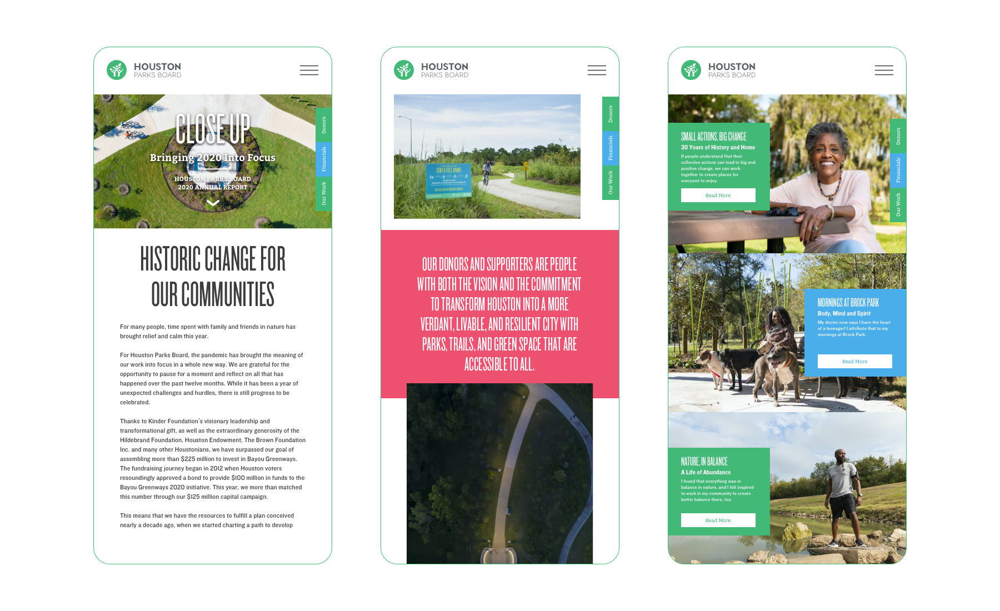
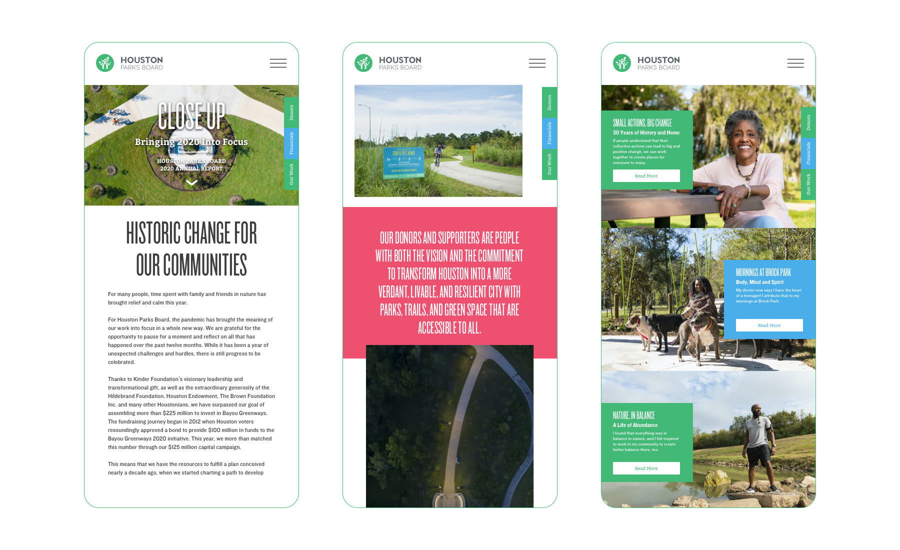
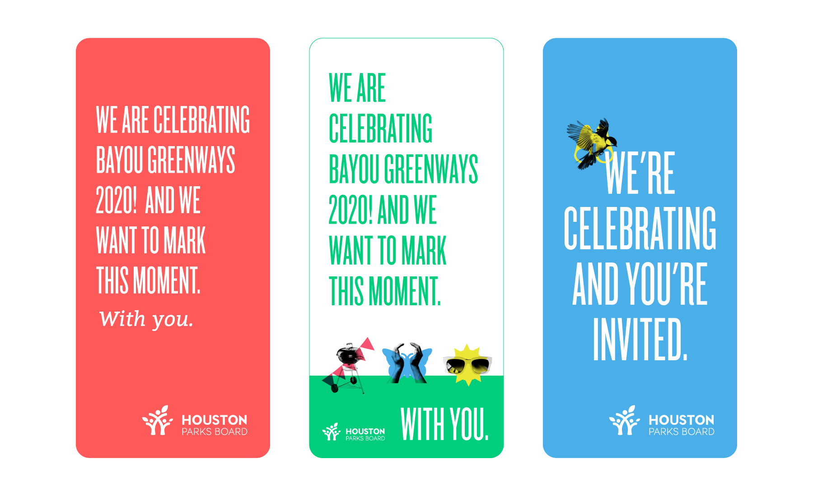
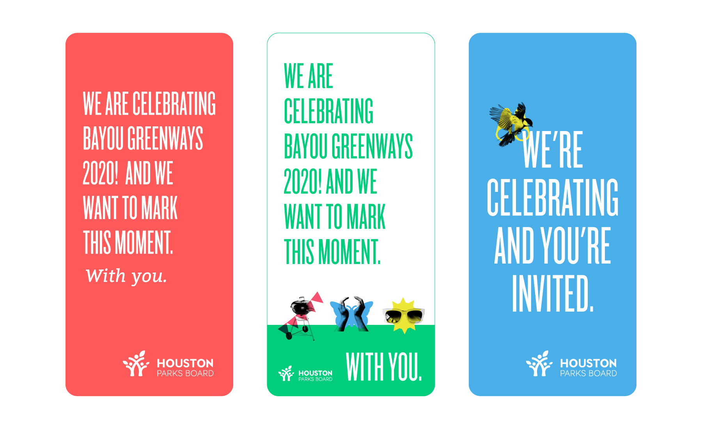

The Black Sheep Agency
To commemorate 2020, the Houston Parks Board (HPB) wanted to find a
way to mark the occasion and highlight reaching their goal of raising
$225 million for the Bayou Greenways Initiative. And because this was
during Covid, they wanted to do a digital annual report because it
could reach a broader section of the community, build awareness and
appreciation for why parks matter and increase HPB's ability to
connect with current and future donors.
As a designer with the Black Sheep Agency, I created site designs,
wireframes and interactive prototypes to build an engaging digital
annual report, while also adhering to brand guidelines. We created a
better, more improved annual report experience to bring the Houston
Parks Board into the modern era.
We received anecdotal feedback that the web-based report was a
refreshing way to view HPB's accomplishments and users loved that it
provided a different user experience. We also received reports that
users loved reading stories that tied the parks to individuals in the
community.

 

 
